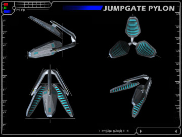

jumpgate tech specsHello Pilot. This is Silivaar Ivyx speaking, sectional chief of the TRI Ministry of Technology. I've attached a brief description of jumpgate technical specs. Until I receive your 330894y form and your technical security clearance, I will not be able to send you specific design readouts. Contact the Secure Data Distribution office for further information. This document will explain basic usage of the standard TRI jumpgate unit. This documentation has been requested by several TRI pilots, and has been declassified for training purposes only. |
| Standard Jumpgate Design |
|
The standard TRI jumpgate is made up of four stabilization pylons tuned to a specific frequency and placed around a stable anomaly. These pylons are made up of three emitter platforms, which give off a soft blue light. The second part of a jumpgate is the stabilized anomaly that is held within the pylons. This miasma of swirling blue energy coexists at two points simultaneously, allowing matter to pass between the gates. However, for this to take place the object must transmit a pulse on the same frequency as the gate itself. Each ship is equipped with a "jump drive" which automates this task when engaged.  |
| Jumpgate Operation Guide |
|
To activate a Jumpgate you will first need to fly into the center of the anomaly. Your HUD's jumpgate indicator will activate when your ship has become completely engulfed in the gate. Now activate your jump drive by pressing "j" on your keyboard (or button 8 on your joystick.) Once you have successfully jumped, thank whatever deities you believe in, and prepare for your next jump. |
|
Jumpgate Warning Rings |
|
As you are flying you may notice "rings" around certain gates. Your HUD draws these holographic indicators, not unlike the docking rings at stations. These rings signify important changes in space locations, and it is vital to understand each ring before entering these gates. Yellow rings indicate that you are leaving TRI regulated space, and entering a neutral sector. In neutral space, TRI bounties and protection regulations do not apply, so be careful! Also, destroying other pilots in a neutral sector will have no effect on either combatant's political ratings, experience, or bounty. In fact, bounties cannot be collected in neutral sectors. Blue rings indicate that you are leaving a neutral sector and entering TRI regulated space. Be careful who you shoot after this point, TRI will be watching you... For more information on the TRI bounty system, see this report. |